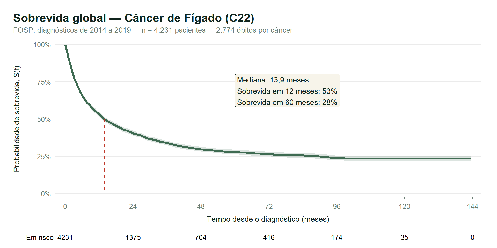
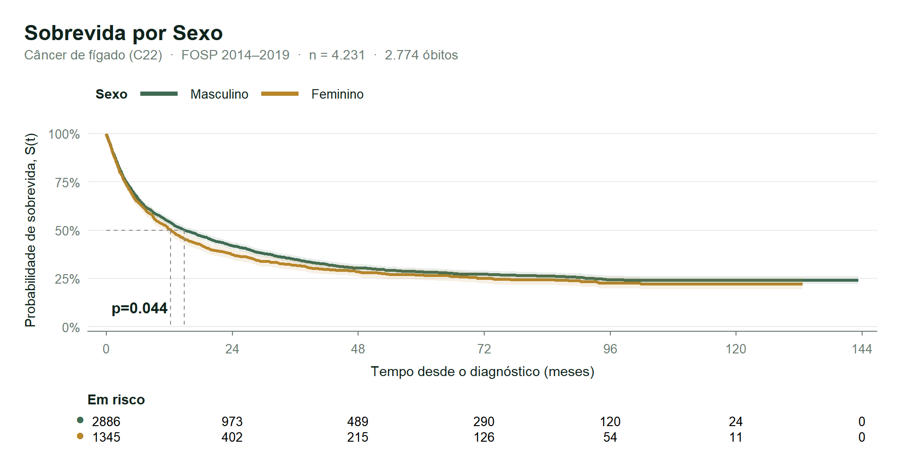
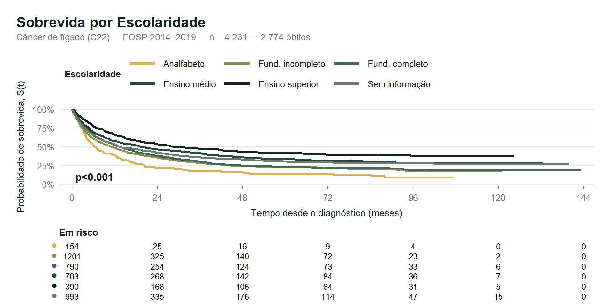
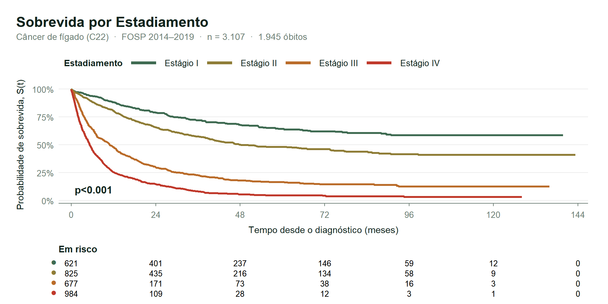
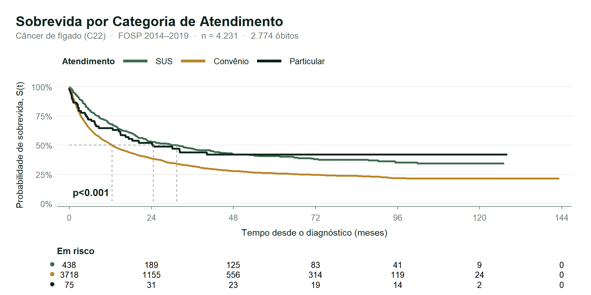
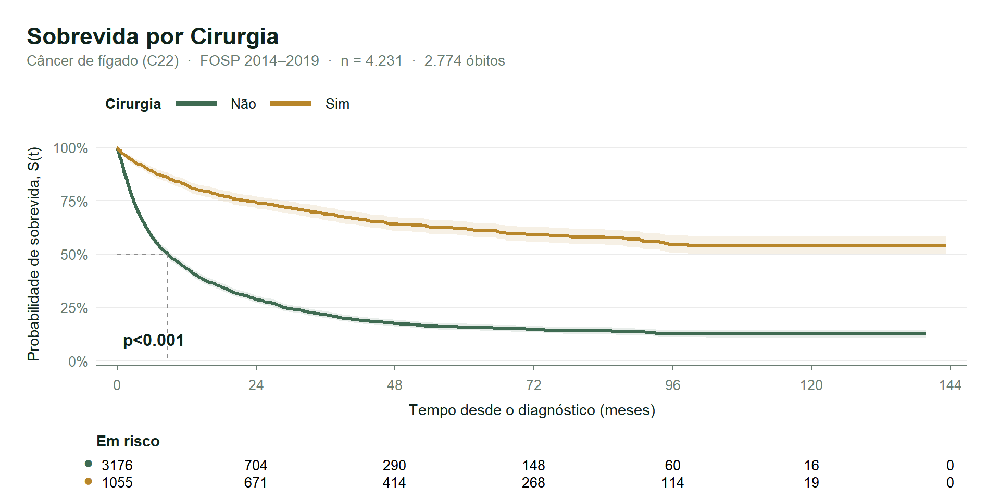
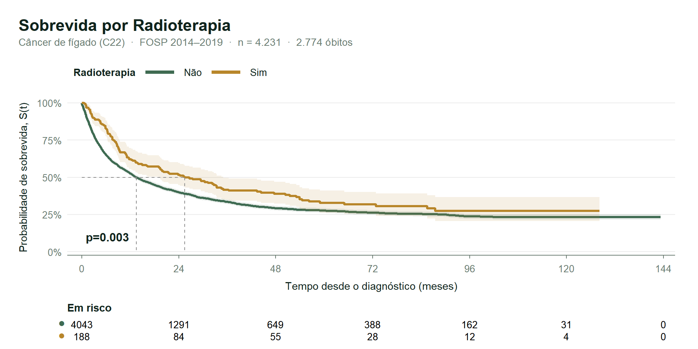
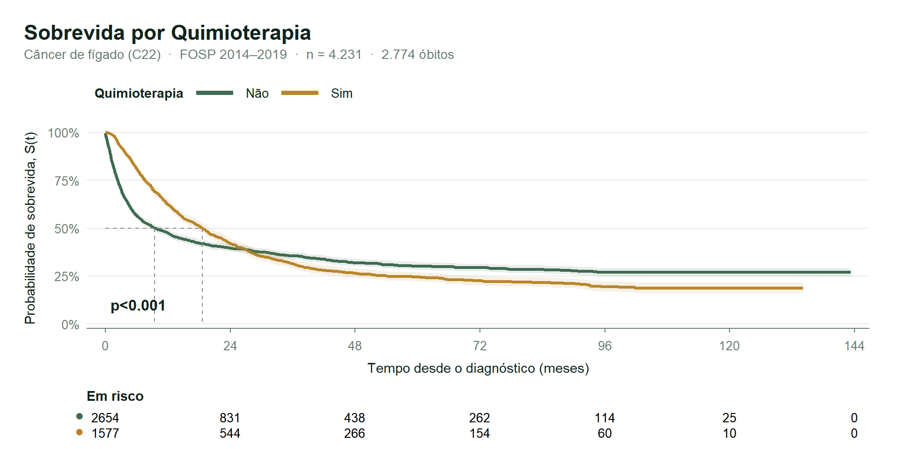
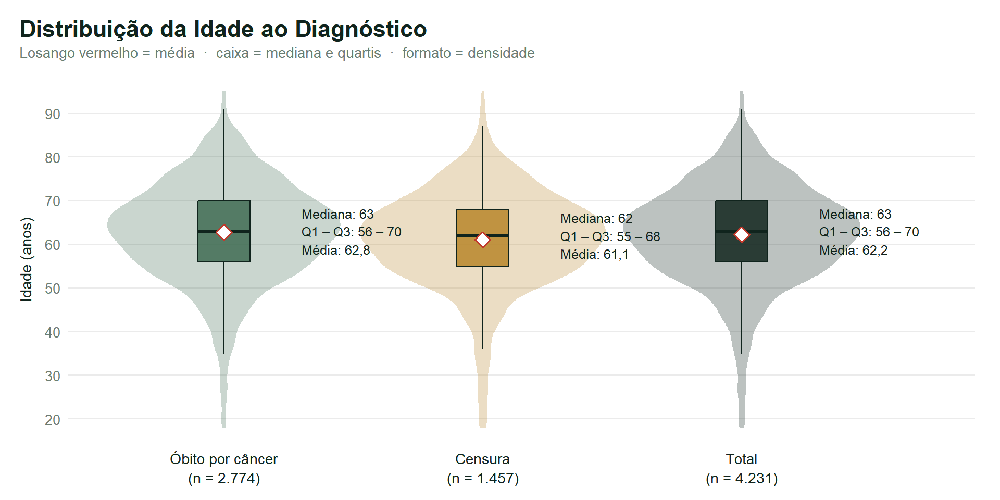

Parte I: Análise Não Paramétrica
Universidade Federal Fluminense
28/09/2026
FOSP · RHC
Relevância
Planejamento assistencial
Priorização de cuidados
Identificação precoce de grupos de risco
Vivos, com câncer
Vivos, SOE
Óbito por outra causa
SEXO ESCOLARI ECGRUP CATEATEND
CIRURGIA RADIO QUIMIO
IDADE — idade ao diagnóstico, em anos
survfit() Kaplan-Meier
survdiff() Log-Rank
survdiff(rho=1) Peto-Peto
pairwise_survdiff() Holm-Bonferroni
SEXO ESCOLARI ECGRUP CATEATEND CIRURGIA RADIO QUIMIO
Média Desvio-padrão Mediana Amplitude interquartílica
median() Dicotomização pela mediana
IDADE
survfit() survdiff()








